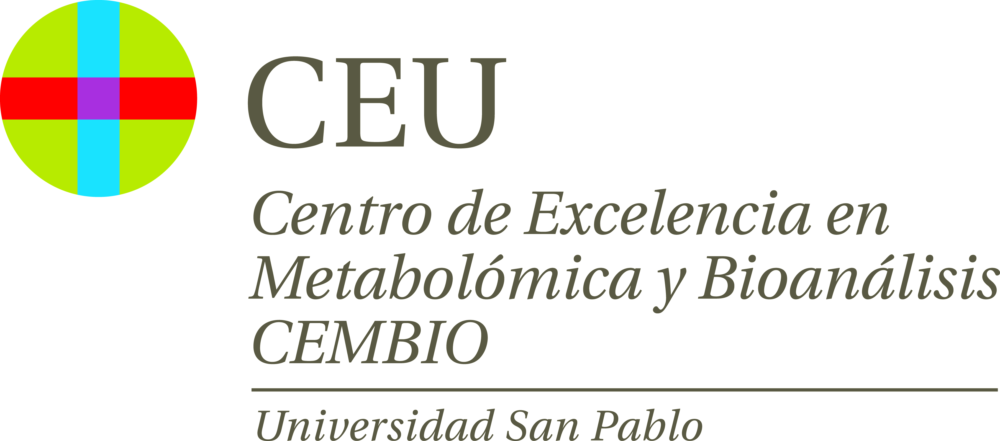

Universidad CEU San Pablo
Escuela Politécnica Superior
Laboratorio de Bioingeniería

Contact Us
Mailing Address
CEMBIO Universidad CEU San Pablo
Urbanización Montepríncipe
Carretera M-501 km 0
Boadilla del Monte
28660 MADRID
Email
cmm.cembio@ceu.es
Phone
(+34) 913724711
Follow Us
Twitter
LinkedIn
Instagram
Data sources
KEGG
Metlin
Lipid Maps
HMDB
NP Atlas
KNApSAcK Metabolomics
MINE